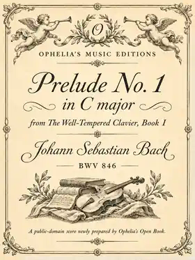

Prelude No. 1 in C major
Johann Sebastian Bach · BWV 846 · From The Well-Tempered Clavier, Book I. Enjoy the complete public-domain score, presented with a Baroque-inspired Ophelia cover and a free listening player.
Everything here is free. Listen, read, print, or download the complete two-page score—no purchase or account required. The music notation was independently typeset for the Mutopia Project and placed in the public domain. Ophelia’s decorative cover is a historically inspired presentation, not a claim of ownership of Bach’s music.
Ophelia’s Baroque cover

Free sheet music · two pages
Open or download the complete score (free PDF) if the preview is blank or difficult to use. You can print it directly from the PDF. Notation source: the Mutopia Project, typeset by Tobias Erbsland and dedicated to the public domain. Ophelia’s cover is a decorative presentation; the notation remains credited to its typesetter.